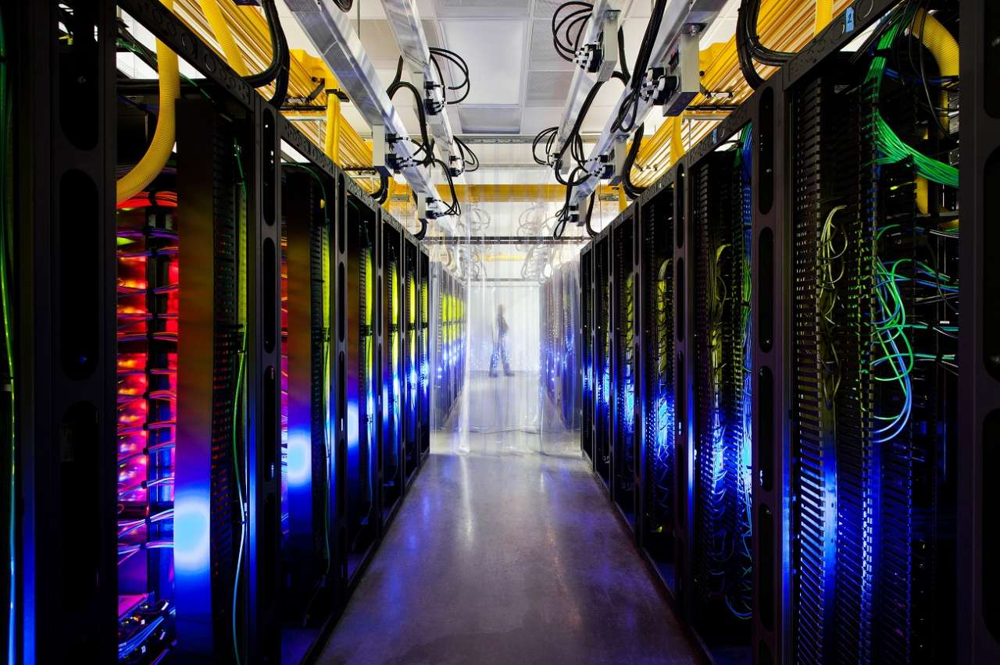

| Google Incide Stone Corporation |
|
|---|---|

|
|
| Тип | публічна компанія |
| Форма власності | Limited Liability Company |
| Галузь | Інтернет |
| Лістинг на біржі | NASDAQ: GOOG |
| Спеціальність | Інтернет, комп'ютерні програми, телекомунікації |
| Засновано | 27 вересня 1998, Менлоу Парк, Каліфорнія |
| Засновники | Сергій Брін, Ларрі Пейдж, Стон Бірч, Меклі Бафоу |
| Штаб-квартира | Маунтін-В'ю, Каліфорнія, США |
| Ключові особи | Ларрі Пейдж-Головний виконавчий деректор Ерік Шмідт-голова ради деректорів Сергій Брін-співзасновник |
| Сайт | google.com |
«Google» – надзвичайно успішна компанія, доходи якої за 2014 рік склали близько $66 млрд., а щосекундна кількість пошукових запитів – понад 50 000. Як відомо, «Google» зародилася як дослідницький проект двох аспірантів Стенфордського університету – Ларрі Пейджа та Сергія Бріна, а вже пізніше еволюціонувала в різні види Інтернет-послуг. А поява інвестицій призвела до можливості придбання корпорацією інших компаній, таких як «YouTube», «DoubleClick», «Keyhole, Inc.» (тепер «Google Earth») та «GrandCentral» (тепер «Google Voice»).
Компанія та фінансування
Декілька цікавих фактів:
- Основною причиною того, що головна сторінка Google має такий голий вигляд, є той факт, що засновники Google просто не знали мови розмітки HTML, і хотіли швидко зробити простий інтерфейс. Насправді вони навіть довгий час не могли зробити кнопку «Знайти». Відправити пошуковий запит можна було тільки натисканням клавіші Enter на клавіатурі. Фактично, сторінка складалася з однієї лише пошукового рядка. Із-за такого незвичайного вигляду головної сторінки у перших тестах юзабіліті Google було помічено, що бета-тестери просто завантажували сторінку та довго дивилися на неї. Через хвилину, коли нічого не відбувалося, у процес тестування втручалися та запитували, що сталося, на що звичайно слідувала відповідь: «Я чекаю, коли завантажиться все інше». Щоб вирішити цю проблему, було вирішено вставити в код сторінки повідомлення про копірайт як явний маркер кінця сторінки. 
- Зараз Google складається з 450 000 серверів, зібраних в дата-центри, по всьому світу.
Перше фінансування для Google становило 100 000 доларів від Енді Бехтольсгейма, одного з засновників Sun Microsystems, отримані в серпні 1998 року, ще до реєстрації компанії. На початку 1999 року, будучи ще аспірантами, Брін і Пейдж вирішили, що їхня пошукова система надто відволікає їх від навчання. Вони запропонували голові Exite Джорджу Беллу продати її за мільйон доларів, але він відмовився від їхньої пропозиції. 7 червня 1999 року було проголошено про раунд фінансування у розмірі 25 млн доларів, з такими великими інвесторами як венчурні компанії Kleiner Perkins Caufield & Byers і Sequoia Capital. Первинна публічна пропозиція (IPO) Google відбулася п'ять років по тому, 19 серпня 2004 року. Компанія запропонувала 19 605 052 акцій за ціною 85 доларів за акцію. Акції були продані через онлайн-аукціон унікального формату, організований андеррайтерами угоди Morgan Stanley и Credit Suisse. Продаж 1,67 млрд дала Google ринкову капіталізацію у розмірі більш ніж 23 мільярда доларів. Переважна більшість із 271 млн акцій залишились під контролем Google, багато працівників Google миттєво стали мільйонерами-власниками цінних паперів. Yahoo!, конкурент Google, також отримав користь, оскільки володів 8,4 млн акцій Google до проведення IPO. 31 жовтня 2007 року вартість акцій досягла 700 доларів, в першу чергу через сильний продаж і доходу на ринку онлайн-реклами. В теперішній час компанія вказується на біржі NASDAQ під тікером GOOG і на Франкфуртській фондовій біржі під тікером GGQ1.
- Google входить в п'ятірку найбільших клієнтів компанії AMD і є клієнтом, який складає найбільше число комп'ютерів не для продажу.
- Переважна більшість з сотень тисяч комп'ютерів, що працюють на Google, складено в компанії.
- Google — четвертий у світі за обсягом кількості складених ПК, після Dell, Hewlett-Packard та IBM.
Google і суспільство
- Через популярність пошуковика в англійській мові з'явився неологізм «to google» («ґуґлити»), що використовується для позначення будь-якого пошуку інформації (вживають не лише стосовно Інтернету, а й під час ходіння по бібліотеці тощо). Це дієслово занесено до словників англійської мови, наприклад, словник Merriam-Webster. Часто вживаються аналогічні дієслова й у багатьох інших мовах.
- Вид мадагаскарських мурах Proceratium google було названо на честь сервісу Google Earth, який допоміг відкривачеві у його дослідженнях.
- Частка плагіату в загальному обсязі дипломних робіт і дисертацій, які захищаються в університетах Західної Європи, досягає 30 %. Цю цифру наводить у своєму дослідженні «Синдром копіювання Google» (англ. Google Copy-Paste Syndrome) австрійський учений Штефан Вебер. Цей феномен він визначає як «безмозку текстову культуру» (англ. Text culture without brains).
Благодійність
У 2004 році Google створила некомерційне благодійне відгалуження — Google.org (Google Foundation), зі стартовим капіталом близько 1 млрд доларів. Основними напрямками діяльності цієї організації є інформування суспільства і сприяння вирішенню проблем зміни клімату, глобального потепління та бідності. Одним із перших його проектів є роботи в галузі гібридних та електричних транспортних засобів.
У 2007 році компанія Google стала спонсором і активним учасником декількох гей-парадів в Сан-Франциско, Нью-Йорку, Дубліні і Мадриді.
У 2008 році Google презентувала «проект 10^100», в якому всі охочі можуть запропонувати ідею, а потім спільно обрати ту, яка імпонує якомога більшій кількості людей. На момент початку голосування запропоновано понад 150 тисяч ідей від людей із 170 країн. У голосуванні бере участь 16 груп ідей, із яких буде вибрано до 5, на допомогу в реалізації яких Google виділив 10 мільйонів доларів. У лютому 2010 році Google пожертвував 2 мільйони доларів на підтримку Вікіпедії. Гроші адресовані фонду Вікімедіа. Отримані гроші фонд Вікімедіа скерував на експлуатаційні витрати, включаючи інвестиції в технічну інфраструктуру і на розвиток підтримки енциклопедії.
Підбір персоналу
При прийомі нових співробітників серед іншого оцінюється їх здатність працювати в умовах чинної корпоративної культури, зокрема в пласкій організаційній структурі й оточенні, що швидко змінюється. Успішний кандидат повинен володіти талантом, креативністю, бути етичним, відкритим, вміти справити враження і без ділового костюма.
Мільйони поданих онлайн резюме спочатку обробляються автоматично, виявляючи тих, хто потенційно може підійти компанії.
Прагнучи привернути таланти, компанія проводить серед студентів коледжів турнір Google Code Jam. На цьому турнірі програмісти змагаються в рішенні задач на час. 15 фіналістів запрошують в штаб-квартиру Google на фінальний раунд.